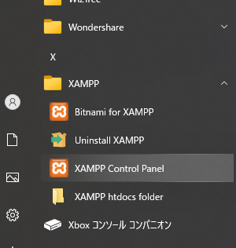
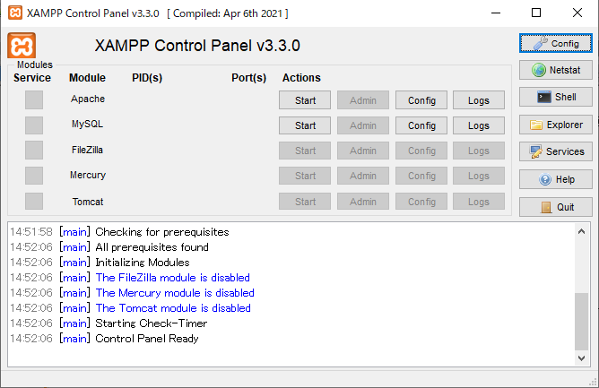
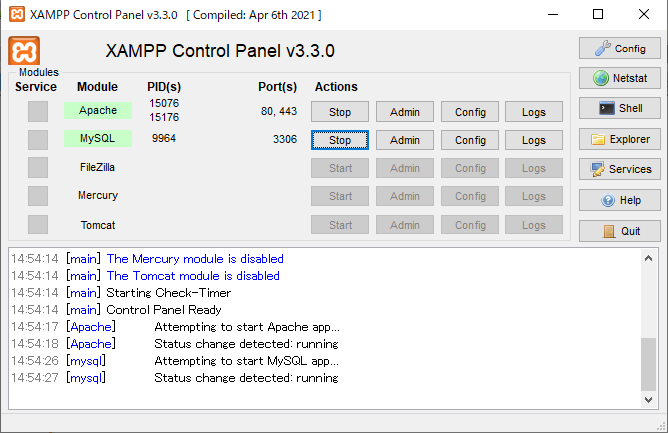
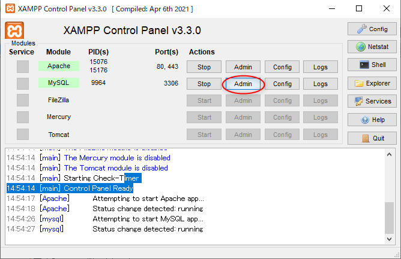
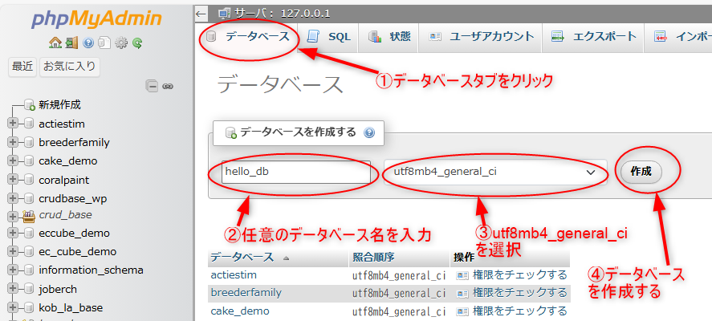
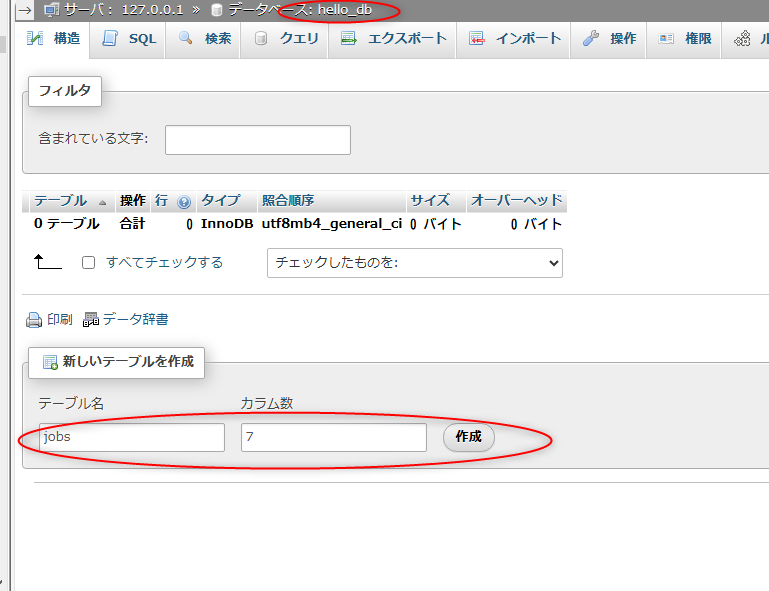
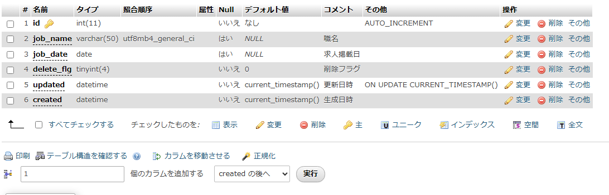

XAMPPは、Windowsで簡単にWeb開発環境を構築できる初心者向けのパッケージです。 Apache（Webサーバー）、MySQL（データベース）、PHPなどが含まれ、手軽にインストールするだけで開発環境を構築できるのが特徴です。 XAMPPをインストールすると、MySQLも利用可能になります。MySQLはXAMPP内に同梱するphpMyAdminというツールでデータベースを操作できます。
近年、XAMPPの代わりにDockerを使う開発者も増えています。Dockerは動作環境を統一するという意味で使われ、実際の現場でもDockerを採用するケースも増えてきました。 ただ、Dockerの構築は難易度高めですので、今回はXAMPPを使用して解説します。
以下のサイトからXAMPPパッケージ（Apache ディストリビューション）をダウンロードできます。 OS別にパッケージが用意されています。自分のパソコンのOSに対応したパッケージをダウンロードしましょう。
https://www.apachefriends.org/jp/download.html
XAMPPは、使用するPHPのバージョンに合わせて選ぶのがポイントです。
用途に応じて適切なバージョンを選ぶことで、よりスムーズな開発が可能になります。
xampp-windows-x64-8.2.12-0-VS16-installer.exe）をダブルクリックして実行。 C:\xampp のままで問題なし。 XAMPPのコントロールパネルは、Windowsのスタートメニューにあるので、そこから開くことができます。
 
また、以下の実行ファイルからもコントロールパネルを起動できます。（C:\xamppにインストールした場合）
C:\xampp\xampp-control.exe

コントロールパネルのMySQL側の「Admin」ボタンを押すだけで、phpMyAdminを起動できます。

また、ブラウザで「 http://localhost/phpmyadmin/ 」にアクセスして起動することもできます。
phpMyAdminは、XAMPPに含まれるデータベース管理ツールです。MySQLのデータベースをGUIで操作できます。テーブルの作成やデータの追加・削除、SQLの実行も簡単に行えます。初心者でも直感的に使える便利なツールです。
今回は、phpMyAdminを使って
hello_dbという名前のデータベースを作成してみます。

yamada_job_search,
tanaka_sale_sysなど。
utf8mb4_general_ciは、日本語や絵文字を扱える現在推奨される文字コードです。
テーブルを設計する際、共通してよく使われるフィールドがあります。 例えば、ID、フラグ系、更新日時、生成日時などです。これらのフィールドは、特別な設定が必要になる場合があります。 以下の作成例を通して、テーブルの作成方法とともに、これらの頻出するフィールドの設定方法を学びましょう。
まずはテーブルの情報を表として作成します。いきなりphpMyAdminでフィールド情報を考えながら作るのでなく、最初は表として作成しておくことをおきます。その理由は次回、解説します。
jobs(求職テーブル)| フィールド | 型 | Null | 主キー | デフォルト値 | コメント |
|---|---|---|---|---|---|
| id | int(11) | NO | PRI | AUTO_INCREMENT | Auto Increment |
| job_name | varchar(50) | YES | NULL | 職名 | |
| job_date | date | YES | NULL | 求人掲載日 | |
| delete_flg | tinyint(4) | NO | 0 | 削除フラグ | |
| updated | datetime | NO | CURRENT_TIMESTAMP ON UPDATE CURRENT_TIMESTAMP | 更新日時 | |
| created | datetime | NO | CURRENT_TIMESTAMP | 生成日時 |
phpMyAdminで先ほど作成したhello_dbのページへアクセスします。

先ほど作成したテーブル情報の表をもとに、手入力でフィールド情報を作成してみましょう。現在では、より効率的な方法もありますが、それについては次回説明します。まずは、実際に手を動かしながら、テーブル作成に必要な情報を理解していきましょう。
id についてid は、テーブル内の各レコード（行）を一意に識別するためのフィールドです。通常は整数型（int）として定義し、AUTO_INCREMENT を指定することで、新しいレコードが追加されるたびに番号が自動的に振られます。
id INT AUTO_INCREMENT PRIMARY KEYvarchar 型についてvarchar は、文字列を格納するデータ型です。最大長を指定し、効率的にストレージを利用できます。
job_name VARCHAR(50)date 型についてdate 型は、日付情報（YYYY-MM-DD）を格納するために使用します。
job_date DATEフラグ系のカラムは 0 か 1 で管理することが一般的です。NULL の使用は避けるべきです。
delete_flg TINYINT(1) NOT NULL DEFAULT 0created は作成時のタイムスタンプ、updated は更新されるたびに最新の日時を記録します。
created DATETIME NOT NULL DEFAULT CURRENT_TIMESTAMP,
updated DATETIME NOT NULL DEFAULT CURRENT_TIMESTAMP ON UPDATE CURRENT_TIMESTAMP
最後に「保存する」ボタンを押すとテーブルが生成されます。以下の感じのテーブルが作成できればOKです。

XAMPP をインストールし、Apache や MySQL を起動することで、ローカル開発環境を整える方法を学びました。これは、Webアプリ開発の基本となる、とても大切なスキルです。
今回は、XAMPP のインストールからデータベース・テーブルの作成までを実践しました。スムーズに進められましたか？ それとも思わぬところでつまずいてしまいましたか？ 実は、開発環境の構築はベテランプログラマーでも苦労することが多く、何時間も試行錯誤するのが普通です。
それでも、今回あなたは XAMPP をインストールし、起動し、データベースを作成し、テーブルまで作れました。これは、本当にすごいことです！ 初めての環境構築に成功したことで、プログラミングの第一歩を踏み出しました。次回は、作成したデータベースを活用して、さらに実践的な操作を学んでいきます。一緒に、楽しみながらステップアップしていきましょう！